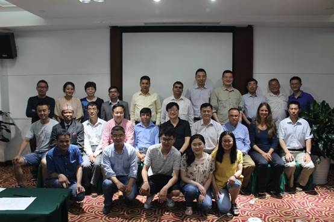
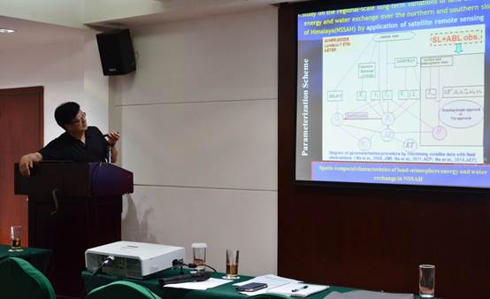
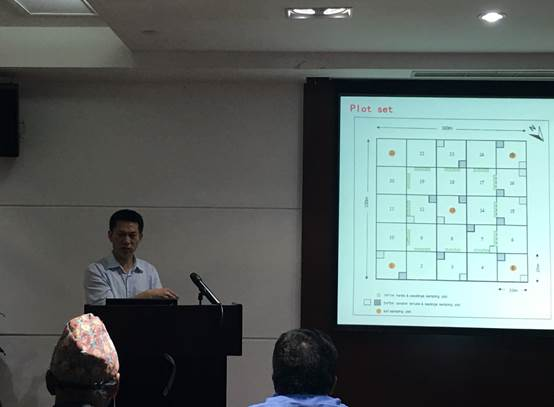
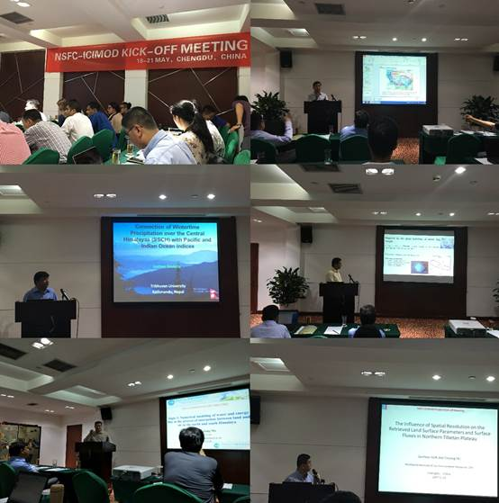
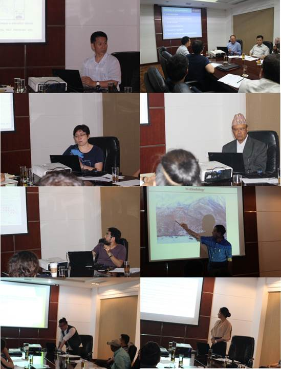

5月19日至21日，NSFC-ICIMOD合作研究项目启动会在四川省成都市顺利召开。此次项目启动会由中科院青藏高原研究所、国际山地综合发展中心（ICIMOD）和尼泊尔特里布文大学联合举办。本次启动会涉及青藏高原所主持的两个项目，项目一为“喜马拉雅南北坡地区地表水分循环特征研究”，由青藏高原所马耀明研究员和ICIMOD的Arun Bhakta Shrestha博士共同主持；项目二为“过去100年来喜马拉雅山东段海拔垂直带上森林结构与格局变化”，由青藏高原所梁尔源研究员和ICIMOD的Nakul Chettri博士共同主持。来自中国、尼泊尔、德国、印度的30多位科学家和研究生参与了本次项目启动会。参会人员包括青藏高原所马耀明研究员、梁尔源研究员、艾丽坤研究员、马伟强研究员和朱海峰副研究员等，中科院西北生态环境资源研究院胡泽勇研究员、孙根厚博士，成都信息工程大学吕世华教授、文军教授和李茂善教授、中国科学技术大学仲雷教授，ICIMOD吴宁研究员、Nakul Chettri博士、Inka Koch博士，以及特里布文大学Ram Prasad Chaudhary教授、Lochan Prasad Devkot教授、Deepak Aryal副教授、Binod Dawadi副教授、Madan Sigdel博士等多位专家。
会议首先由马耀明研究员致开幕辞，ICIMOD吴宁研究员对NSFC-ICIMOD项目的立项背景进行了介绍。随后，马耀明研究员，梁尔源研究员分别代表项目组对两个项目的研究目标、研究内容以及2017年至2019年的工作计划进行了汇报，并就研究方案和具体工作计划等与专家进行了讨论。接下来，两个项目组成员分别汇报了喜马拉雅南北坡能量水汽的定量分析、遥感观测、数值模拟、冰川波动、降水变化及自然灾害分析、喜马拉雅山东部干城章嘉峰地区的生态保护现状、喜马拉雅山南坡生物多样性研究进展、第三极地区树线网络研究计划、人类活动与生态保护、第三极地区和喜马拉雅山山区冰川波动研究、喜马拉雅山东部垂直带样地综合研究计划等研究内容，积极展示了各学科领域在喜马拉雅山及第三极地区的获得的最新研究成果。与会专家深入探讨了上述内容和具体研究方案和计划，并就在喜马拉雅山地区继续开展研究工作和深入合作等问题展开研讨，为NSFC-ICIMOD两项合作研究项目的顺利执行奠定了基础。

与会专家合影

马耀明研究员作项目总体介绍

梁尔源研究员作项目总体介绍


课题成员介绍课题任务